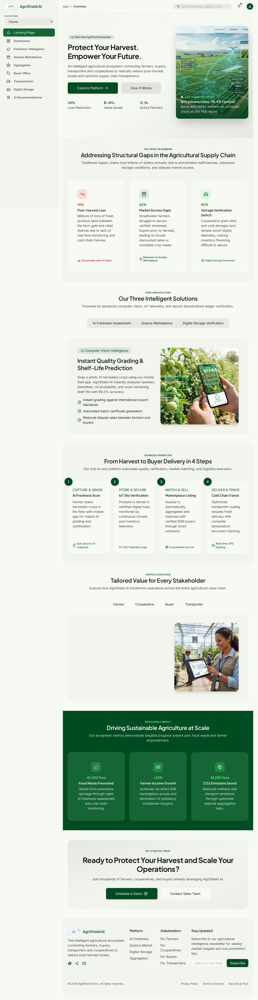

Protect Your Harvest.
Empower Your Future.
An intelligent agricultural ecosystem connecting farmers, buyers, transporters, and cooperative societies to radically prevent post-harvest biological losses and optimize supply chain transparency across rural India.

Real-time biological degradation scoring with R² = 0.98 accuracy.
Addressing Structural Gaps in the Agricultural Supply Chain
Traditional agricultural corridors lose billions annually due to preventable inefficiencies, unmonitored storage microclimates, and predatory middleman arbitrage.
Post-Harvest Loss
Millions of tons of perishables spoil between the farm gate and consumer markets due to thermal shock and unventilated transit.
Sub-Truckload Distress
Smallholder farmers with small surplus lots are unable to afford full truckloads, forcing distressed sales at mandi gates.
Storage Fraud & Paper Receipts
Cooperative grain godowns rely on vulnerable paper records, leading to grain spoilage disputes and inability to access pledge finance.
Integrated Intelligence Engines
Seamlessly combining biochemical shelf-life models, Haversine geospatial pooling, and cryptographic verification.
AI Freshness Intelligence
Evaluates respiratory thermal acceleration ($Q_{10}$) and vapor pressure deficits (VPD) combined with Scikit-learn regression models to predict exact hours of safe shelf life remaining.
Smart Surplus Aggregation
Connects smallholders within a 25km radius to pool fragmented crops into commercial bulk lots, backed by atomic database row locks to guarantee zero double-allocation risk.
Digital Storage Ledger
Tamper-evident warehouse receipts chained with SHA-256 cryptographic hashes, isolating authenticity, moisture testing, and physical grain grade metrics for complete auditability.
Transport Coordination & Route Optimization
Instant haulage quotations using road-network calibrated Haversine heuristics, automated reefer temperature verification, and 6-digit cryptographic delivery OTPs.
Predictive Climate Intelligence
Continuous satellite and ground-sensor telemetry tracking 24-hour diurnal thermal swings, humidity extremes, and early frost warnings across Maharashtra agricultural sectors.